Un ordinateur, à la base, ne fait rien d’autre que manipuler des 0 et des 1. Ces chiffres représentent des signaux électriques :
0 = pas (ou peu) de différence de potentiel (tension faible)1 = différence de potentiel présente (tension élevée)À partir de ces deux états, l’ordinateur peut prendre des décisions et faire des calculs.
Voir ici si besoin !
Les portes logiques sont comme des mini-interrupteurs électroniques. Elles prennent un ou plusieurs 0 ou 1 en entrée et produisent un 0 ou un 1 en sortie, selon une règle précise.
Voici les principales portes :
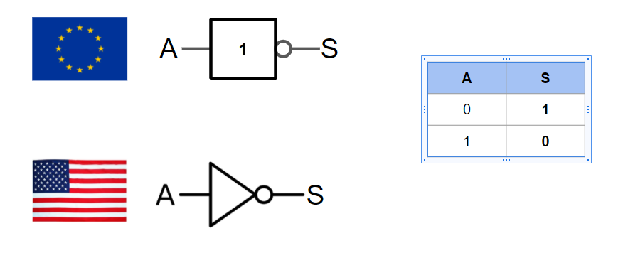
→ Source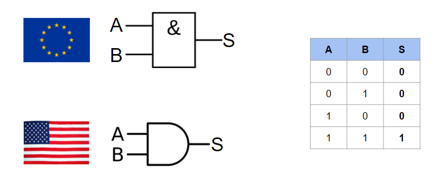
→ Source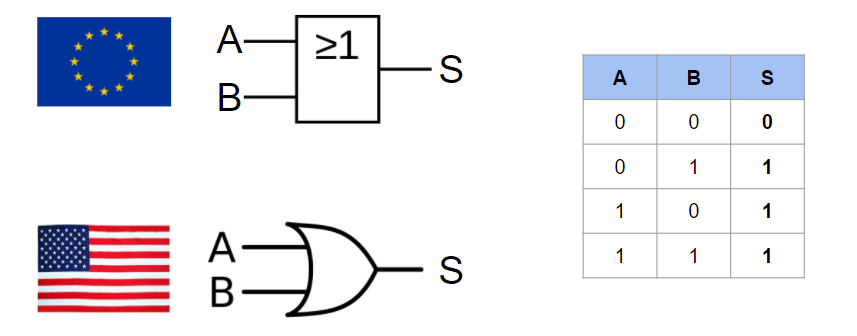
→ Source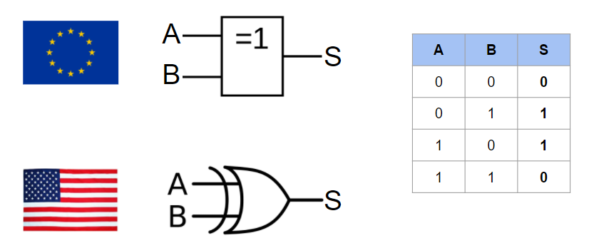
→ SourceToutes les portes logiques que nous avons vues (AND, OR, NOT, XOR…) sont construites avec de minuscules interrupteurs électroniques appelés transistors.
Mais il existe beaucoup plus que de simples portes logiques : en combinant plusieurs portes, on peut créer des circuits plus complexes.
Définition : Un circuit combinatoire produit une sortie uniquement en fonction des entrées actuelles.
Définition : Ils permettent d’additionner des nombres binaires.
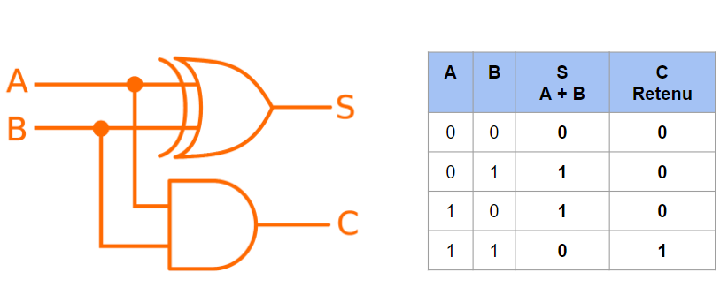
→ Source→ Il additionne 2 bits, produit une somme et une retenue.
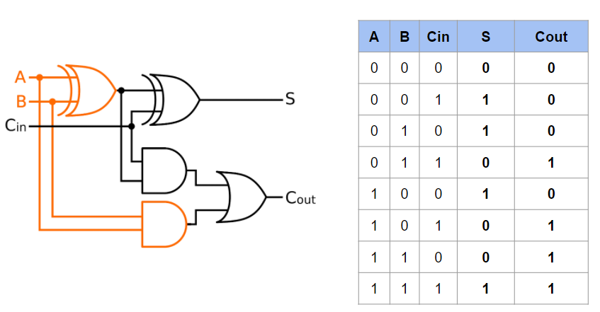
→ Source→ Il additionne 2 bits + la retenue d’une étape précédente, produit une somme et une retenue.
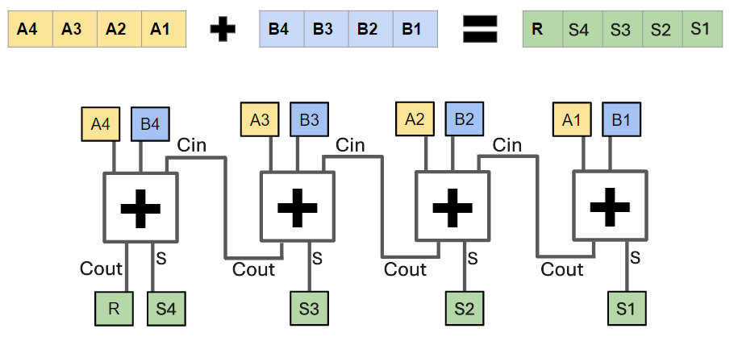
→ Source→ Il additionne des nombres binaires de plusieurs bits en enchaînant les additionneurs complets.
Définition : Ils permettent de sélectionner une entrée parmi plusieurs et de la diriger vers la sortie.
Ceux-ci sont beaucoup utilisés pour transmettre des données comme à travers un BUS série. C'est l'émetteur.
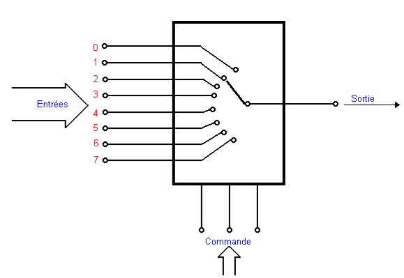
|
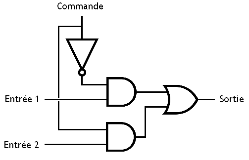 |
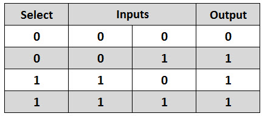 |
Ici le multiplexeur est à 2 voies.
Définition : Ils font font l’inverse : ils prennent une entrée et la dirigent vers une des sorties possibles.
Ceux-ci sont beaucoup utilisés pour transmettre des données comme à travers un BUS série. C'est le récepteur.
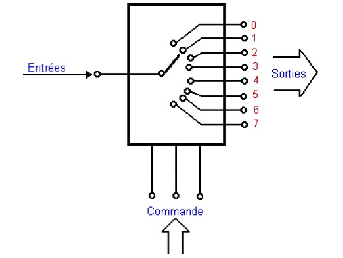
|
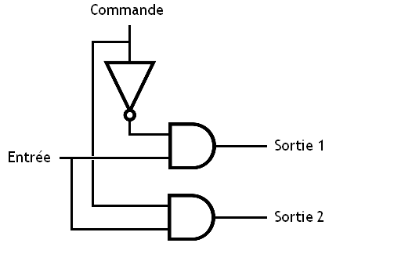 |
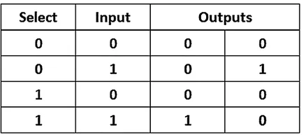 |
Ici le démultiplexeur est à 2 voies.
Voici un exemple de mise en commun de ces deux composants logiques :
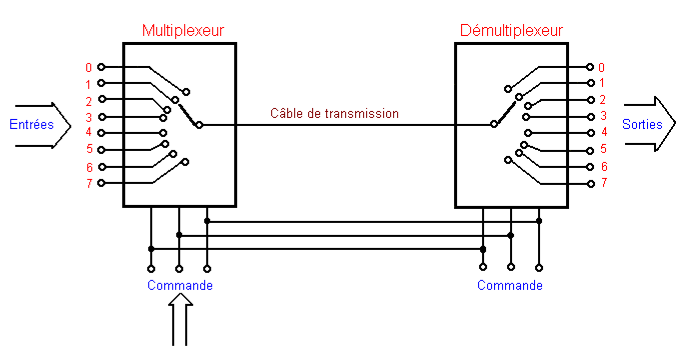
Définition : Un circuit séquentiel dépend non seulement des entrées actuelles, mais aussi de l’état précédent.
Contrairement aux circuits combinatoires, ces circuits possèdent une mémoire. Ils peuvent donc stocker des informations et les réutiliser plus tard.
Définition : Ce sont les éléments fondamentaux de la mémoire dans les circuits numériques.
Types principaux de bascules :
→ Permet de définir (Set) ou réinitialiser (Reset) un bit.
Utilisation : mémorisation simple, circuits de contrôle.
|
→ Stocke la valeur d’entrée à chaque impulsion d’horloge.
Utilisation : registres, mémoire, synchronisation de signaux.
|
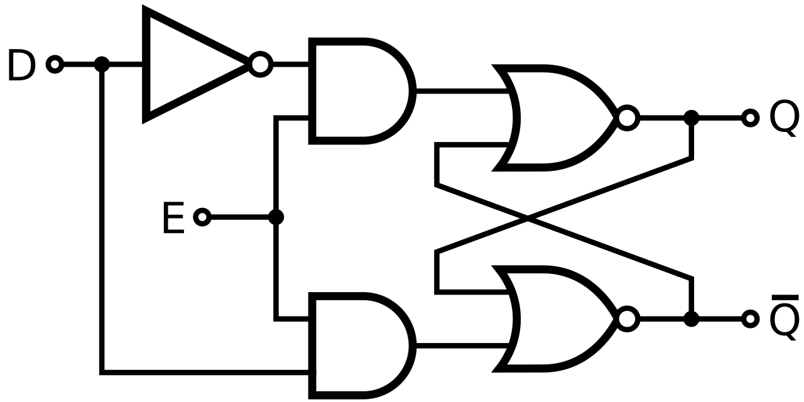 |
|
→ Version améliorée de la bascule RS, sans état interdit.
Utilisation : compteurs, circuits séquentiels complexes.
|
→ Change d’état (0 → 1 ou 1 → 0) à chaque impulsion si activée.
Utilisation : diviseurs de fréquence, compteurs binaires.
|
Définition : Ils permettent de stocker temporairement plusieurs bits.
Il existe également des registres à décalage, capables de déplacer les bits vers la gauche ou la droite à chaque impulsion d’horloge, ce qui est très utilisé pour le transfert et le traitement séquentiel des données.
→ Un registre est un ensemble de bascules permettant de stocker un mot binaire (ex : 8 bits, 16 bits…).
Utilisation : stockage de données, traitement dans les processeurs.
En savoir plus sur les registres ?Définition : Ils permettent de compter des impulsions ou des cycles d’horloge.
→ Ils sont souvent construits à partir de bascules en chaîne.
Utilisation : horloges, timers, division de fréquence.
En savoir plus sur les compteurs ?Grâce à la combinaison des portes logiques, des circuits combinatoires et des circuits séquentiels, un ordinateur peut effectuer des calculs, prendre des décisions et mémoriser des informations.
Toute la puissance des systèmes modernes repose sur ces simples états binaires (0 et 1) et sur leur organisation en circuits de plus en plus complexes.
Ainsi, de simples transistors permettent de construire des processeurs capables d’exécuter des milliards d’opérations par seconde.
Page suivante →